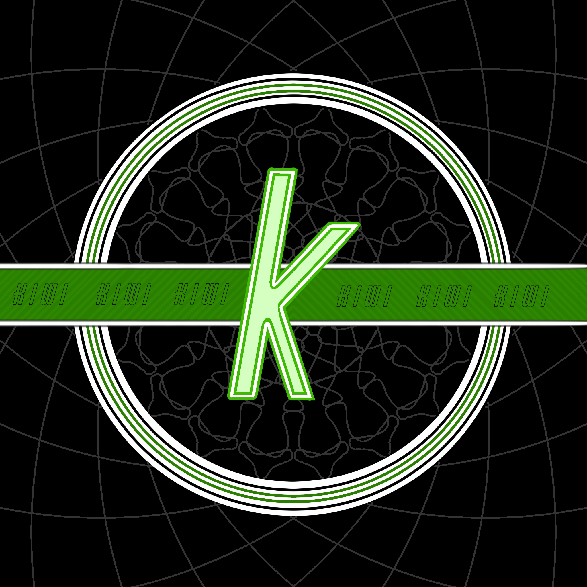
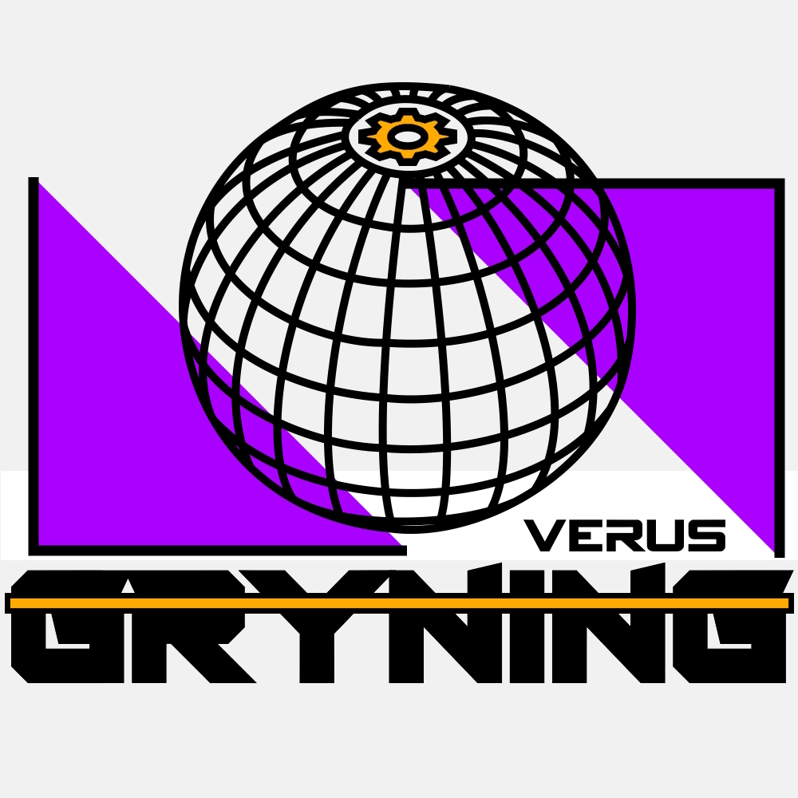

Teams


NEWS
BREAKING: Reigning Champions Rebrand As Celcius Kiwi Racing In Bold New Era
In a stunning move that has sent shockwaves through the Formula One fantasy league,
the reigning champions "Kiwi Construct" have officially rebranded as "Celcius Kiwi Racing",
signaling a dramatic shift in their approach for the upcoming season.
The announcement comes after weeks of speculation surrounding the team’s
future, particularly following the departure of Verus Gryning, which
left an open slot in the competition. With Kiwi Construct opting to
introduce a second entry this season, the decision was made to give one
of its teams a fresh identity—one that reflects a strategic evolution
at the very top of the standings.

A New Name, A New Philosophy
Celcius Kiwi Racing will retain much of the core that made them champions, but the rebrand
is more than just a cosmetic change. The team is moving away from its high-risk, all-or-nothing
tactics that defined its title-winning run. Instead, it will embrace a more measured,
calculated approach to ensure sustained success in the long term.
This marks a significant philosophical shift for the organization, which had built a reputation
on aggressive decision-making and bold plays. Now, under the new Celcius Kiwi Racing banner,
the team aims to strike a balance between calculated strategy and raw competitiveness.
Alex Brewitz Speaks on the Rebrand
Team owner Alex Brewitz addressed the decision in an official statement,
reinforcing the team’s commitment to success:
"Winning a championship is one thing—staying at the top is another. Celcius Kiwi Racing is about
adapting, evolving, and making sure we remain a dominant force in the competition.
This isn’t just a name change. It’s a statement. We’re here to stay, and we’re here to
win—smarter and stronger than before."
With their sights set on defending their title, Celcius Kiwi Racing now prepares for the
upcoming season under a new identity, a refined strategy, and a champion’s mindset. As the
competition gears up, all eyes will be on the newly rebranded powerhouse to see if they can
turn this bold transformation into yet another victorious campaign.
by Chatgpt 2024-03-04
Team Rebrand From Verus Construct To Gryning
As the countdown to the new Formula 1 season continues, fantasy racing team Verus Construct
has announced a rebrand, officially changing its name to Verus GRYNING.

The name change comes as part of a fresh identity for the team, signaling a new era of
competition in the F1 fantasy league. While the core management and strategic approach remain
unchanged, the rebrand is expected to bring renewed energy and ambition heading into the season.
A spokesperson for Verus GRYNING commented on the change, stating,
“We wanted a name that reflects both our evolution and our drive for success. ‘GRYNING’
represents a new dawn for the team, and we’re ready to take on the challenges ahead.”
Fans and competitors alike will be watching closely to see if the rebrand translates
into improved results on the fantasy leaderboard. With pre-season preparations
well underway, Verus GRYNING aims to make an impact when the lights
go out for the first Grand Prix.
by Chatgpt 2024-03-02
New Teams Planned To Join The 2025 Season
The 2024 season that has been seen as a test season with only starting mid-early into the 2024 race calendar. Kiwi Construct and Verus Construct are the 2 current teams that has been confirmed for the 2025 season with Kiwi Construct having a high chance to add an additional team. There has on top of this news been talks with 2 different potential owners of new teams for joining the competition. The current supported spots are XP, UMBERTO, DRS and FZAA with having a high chance of chancing into new IDs.
by Alex Brewitz 2024-12-31
2024 Chat-N-Friends-League Champion
With the final race coming down to the last wire, the winner was ultimately awarded to KIWI CONSTRUCTS with the incredible performance from Charles Leclerc. Going into Abu Dhabi the score was 58 points apart form Verus construct and Kiwi construct with Kiwi in the lead. Although it was not to be taken lightly since Verus had an incredible 5.3M larger cap hit. The lineup for each team going into the final race became very similar but had some major differences that would affect who would be on top.

This race Verus constructs needed a huge change which was why they activated the wildcard chip that allowed them to change drivers without taking penalty points.
Verus construct was running a lineup of Lando Norris as their head driver with 2x DRS and Geogre Russell as number 2 followed up by Pierre Gasly, Nico Hulkenberg and Valtteri Bottas.
Lando Norris became the huge lead here for taking 1st place in the race itself and scoring a whooping 70p for Verus constructs.
While there where some disappointments such like Geogre Russell with only 17p for a 23.2M driver or Valtteri Bottas with -16p due to a crash that lead to a retirement,
it did go better than the last race in Qatar. With the Constructors Verus went with McLaren that scored 65p and the surprising HAAS that could have
been the wildcard to make sure Verus construct could take the lead. HAAS only managed to retrive 30p in total from Nico Hulkenberg and Kevin Magnussen.
In total Verus Construct went up +4 points from Qatar with a 192 points performance.
In the case for KIWI constructs they only made 3 changes which was switching out Charles Leclerc to Lando Norris, Liam Lawson to Pierre Gasly and Nico Hulkenberg to Zhou Guanyu.
With the 2 drivers Franco Colapinto and Valtteri Bottas it took down -36 points together with both drivers either crashing or retiring the car. With this outcome people could expect Kiwi construct to lose the 58 point lead when it immediately went to 22 point differences.
But the major factor to the victory of Kiwi construct was the Ferrari car with Charles Leclerc when he went from p18 at the start of the race to p3 taking in 16 points in positions gained and 14 points in overtakes with a total 55 points from him alone.
With this total Kiwi constructs got a final score of 203 points and took home the Chat-N-Friends-League championship.
Some of the major performance came from Kiwi constructs 310 point weekend in Austin USA with the highest total points in a single weekend and winning 14 out of the total 20 races. Verus Construct also had the honor of having the largest point jump from one weekend to another with a differences of 156 points.
Overall it was an incredible season with a close fight coming down to the very end with 3243 points to 3174 points.
by Alex Brewitz 2024-11-24